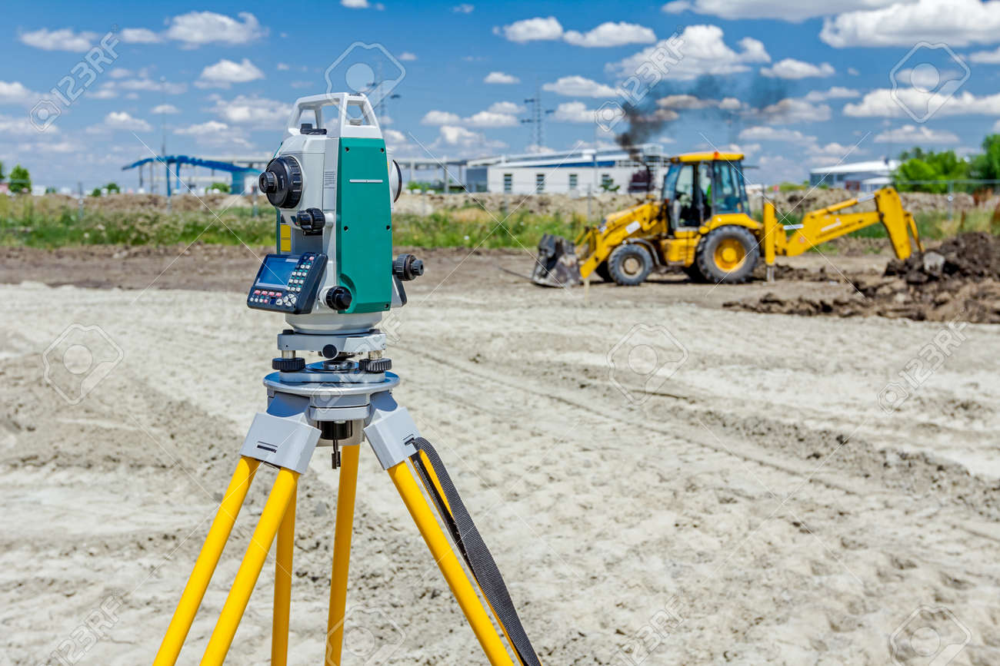

¿Qué son las carteras topográficas?
Las carteras topográficas recopilan información detallada del terreno para garantizar precisión en la planificación de obras civiles, hidráulicas y urbanísticas.
Incluyen curvas de nivel, límites de propiedad, servicios públicos y análisis de riesgos como inundaciones o deslizamientos.
Son herramientas estratégicas para optimizar recursos, minimizar errores y asegurar la eficiencia en cada proyecto.
